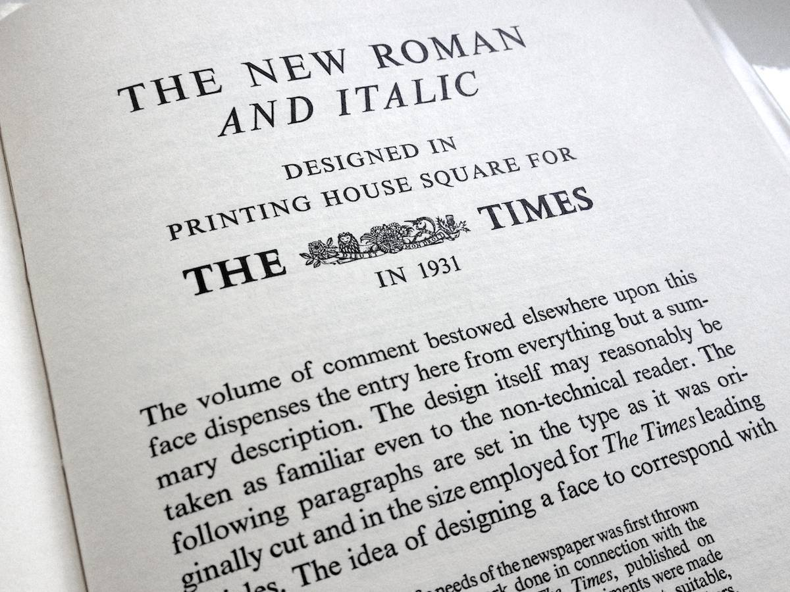

Times New Roman gets its name from the Times of London, the British newspaper. In 1929, the Times hired typographer Stanley Morison to create a new text font. Morison led the project, supervising Victor Lardent, an advertising artist for the Times, who drew the letterforms.
Even when new, Times New Roman had its critics. In his typographic memoir,
Because it was used in a daily newspaper, the new font quickly became popular among printers of the day. In the decades since, typesetting devices have evolved, but Times New Roman has always been one of the first fonts available for each new device (including personal computers). This, in turn, has only increased its reach.
Objectively, there’s nothing wrong with Times New Roman. It was designed for a newspaper, so it’s a bit narrower than most text fonts—especially the bold style. (Newspapers prefer narrow fonts because they fit more text per line.) The italic is mediocre. But those aren’t fatal flaws. Times New Roman is a workhorse font that’s been successful for a reason.
Yet it’s an open question whether its longevity is attributable to its quality or merely its ubiquity. Helvetica still inspires enough affection to have been the subject of a 2007 documentary feature. Times New Roman, meanwhile, has not attracted similar acts of homage.
Why not? Fame has a dark side. When Times New Roman appears in a book, document, or advertisement, it connotes apathy. It says,
This is how Times New Roman accrued its reputation as the default font of the legal profession—it’s the default font of everything. As a result, many lawyers erroneously assume that courts demand 12-point Times New Roman. In fact, I’ve never found one that does. (But there is one notable court that forbids it—see court opinions.) In general, lawyers keep using it not because they must, but because it’s familiar and entrenched—much like those obsolete typewriter habits.
If you have a choice about using Times New Roman, please stop. You have plenty of better alternatives—whether it’s a different system font or one of the many professional fonts shown in this chapter.